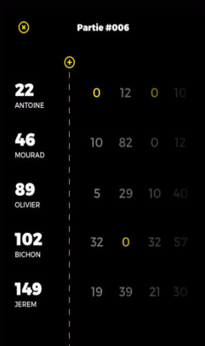
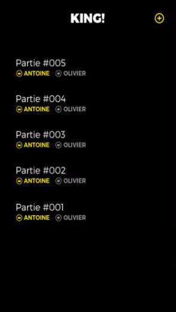
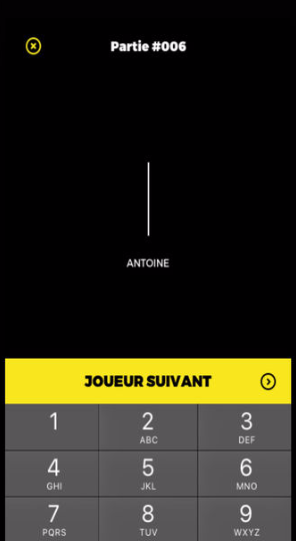

KING!
Suivi de scores
« C’est toujours celui qui compte les points qui gagne »
– Olivier D.
« J’ai sauvé 3 amitiés depuis que je compte les points avec l’application KING! »
— Julien B.
Plus de litiges pendant vos parties de KING. Avec l’application KING!, comptez les points automatiquement.